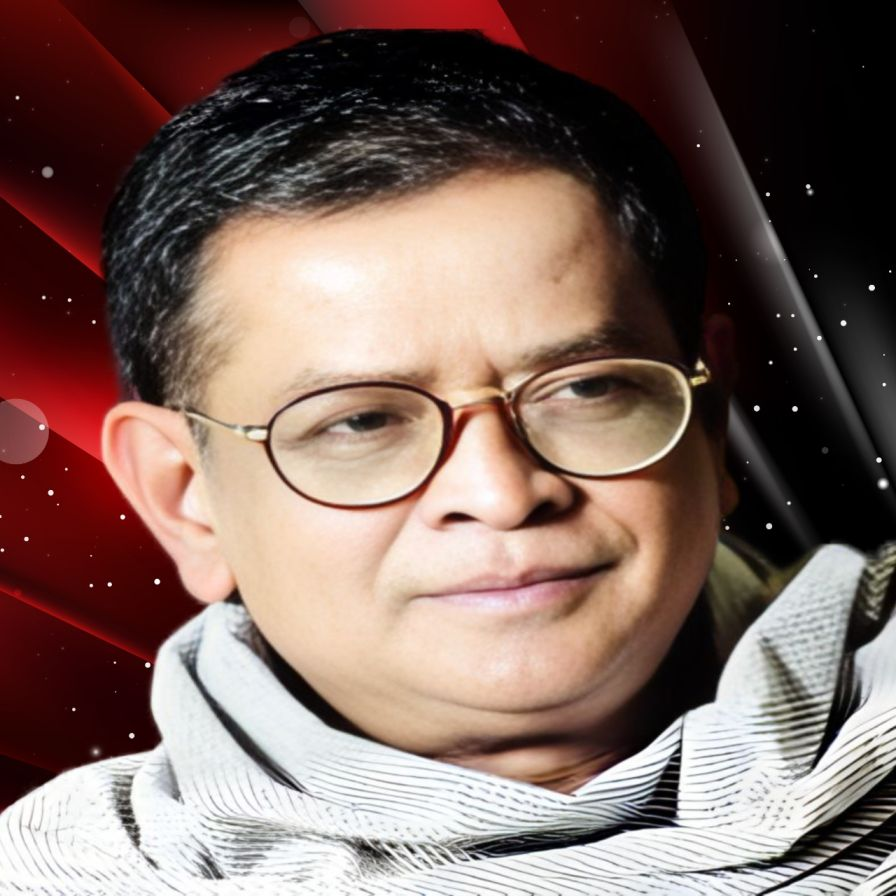

Homepage
Email
Israq's Library
Select your author

Humayun Ahmed
হুমায়ূন আহমেদ (১৩ নভেম্বর ১৯৪৮ - ১৯ জুলাই ২০১২) ছিলেন একজন বাংলাদেশি ঔপন্যাসিক, ছোটগল্পকার, নাট্যকার এবং গীতিকার, চিত্রনাট্যকার ও চলচ্চিত্র নির্মাতা। তিনি বিংশ শতাব্দীর অন্যতম জনপ্রিয় বাঙালি কথাসাহিত্যিক। তাকে বাংলাদেশের স্বাধীনতা পরবর্তী অন্যতম শ্রেষ্ঠ ও জনপ্রিয় লেখক বলে গণ্য করা হয়।
Read Books
Sadat Hossain
সাদাত হোসাইন (জন্ম ২১ মে ১৯৮৪) একজন বাংলাদেশী কবি ও ঔপন্যাসিক। তিনি নিজেকে গল্পকার হিসেবে পরিচয় দিতে ভালোবাসেন।
Read Books
Zafar Iqbal
মুহম্মদ জাফর ইকবাল (জন্ম: ২৩ ডিসেম্বর ১৯৫২) হলেন একজন বাংলাদেশী কথাসাহিত্যিক ও বিজ্ঞান কল্পকাহিনী লেখক, কলাম লেখক, পদার্থবিদ, শিক্ষাবিদ ও আন্দোলনকর্মী। তিনি ওয়াশিংটন বিশ্ববিদ্যালয় থেকে পিএইচডি ডিগ্রি লাভ করেন।
Read Books
Hasan Azizul Huq
হাসান আজিজুল হক (২ ফেব্রুয়ারি ১৯৩৯ – ১৫ নভেম্বর ২০২১) ছিলেন একজন বাংলাদেশী ঔপন্যাসিক ও ছোট গল্পকার। তিনি বাংলা ভাষার অন্যতম প্রধান কথাসাহিত্যক হিসেবে পরিগণিত। ষাটের দশকে আবির্ভূত এই কথাসাহিত্যিক তাঁর সুঠাম গদ্য এবং মর্মস্পর্শী বর্ণনাভঙ্গির জন্য প্রসিদ্ধ। জীবনসংগ্রামে লিপ্ত মানুষের কথকতা তার গল্প-উপন্যাসের প্রধানতম অনুষঙ্গ। রাঢ়বঙ্গ তার অনেক গল্পের পটভূমি। আগুনপাখি (২০০৬) হক রচিত প্রথম উপন্যাস।তিনি ১৯৭০ সালে বাংলা একাডেমি সাহিত্য পুরস্কার লাভ করেন। বাংলাদেশ সরকার তাকে ১৯৯৯ সালে একুশে পদকে ও ২০১৯ সালে স্বাধীনতা পুরস্কারে ভূষিত করে। এই অসামান্য গদ্যশিল্পী তার সার্বজৈবনিক সাহিত্যচর্চার স্বীকৃতি স্বরূপ ২০১৮ সালের সেপ্টেম্বরে “সাহিত্যরত্ন” উপাধি লাভ করেন।
Read Books
Zahir Raihan
জহির রায়হান (১৯ আগস্ট ১৯৩৫ — ৩০ জানুয়ারি ১৯৭২) ছিলেন একজন প্রখ্যাত বাংলাদেশী চলচ্চিত্র পরিচালক, ঔপন্যাসিক এবং গল্পকার। বাংলা সাহিত্যের গল্প শাখায় অবদানের জন্য তিনি ১৯৭২ সালে বাংলা একাডেমি সাহিত্য পুরস্কার লাভ করেন। চলচ্চিত্রে অবদানের জন্য বাংলাদেশ সরকার তাকে ১৯৭৭ সালে মরণোত্তর বাংলাদেশের দ্বিতীয় সর্বোচ্চ বেসামরিক সম্মাননা একুশে পদক এবং সাহিত্যে অবদানের জন্য ১৯৯২ সালে মরণোত্তর বাংলাদেশের সর্বোচ্চ বেসামরিক সম্মাননা স্বাধীনতা পুরস্কারে ভূষিত করে। চলচ্চিত্রে তার সামগ্রিক অবদানের জন্য ১৯৭৫ সালে ১ম জাতীয় চলচ্চিত্র পুরস্কারে তাকে মরণোত্তর বিশেষ পুরস্কার প্রদান করা হয়।
Read Books
Sarat Chandra Chattopadhyay
শরৎচন্দ্র চট্টোপাধ্যায় ৩১ ভাদ্র, ১২৮৩ - ২ মাঘ, ১৩৪৪ (১৫ সেপ্টেম্বর ১৮৭৬ – ১৬ জানুয়ারি ১৯৩৮) ছিলেন একজন বাঙালি লেখক, ঔপন্যাসিক, ও গল্পকার। তিনি দক্ষিণ এশিয়া এবং বাংলা ভাষার অন্যতম জনপ্রিয় কথাসাহিত্যিক। তার অনেক উপন্যাস ভারতবর্ষের প্রধান ভাষাগুলোতে অনূদিত হয়েছে। বড়দিদি (১৯১৩), পরিণীতা (১৯১৪), পল্লীসমাজ (১৯১৬), দেবদাস (১৯১৭), চরিত্রহীন (১৯১৭), শ্রীকান্ত (চারখণ্ডে ১৯১৭-১৯৩৩), দত্তা (১৯১৮), গৃহদাহ (১৯২০), পথের দাবী (১৯২৬), শেষ প্রশ্ন (১৯৩১) ইত্যাদি শরৎচন্দ্র রচিত বিখ্যাত উপন্যাস। বাংলা সাহিত্যের ইতিহাসে অপ্রতিদ্বন্দ্বী জনপ্রিয়তার জন্য তিনি 'অপরাজেয় কথাশিল্পী' নামে খ্যাত। তিনি কলিকাতা বিশ্ববিদ্যালয় থেকে ১৯২৩ খ্রিষ্টাব্দে জগত্তারিণী স্বর্ণপদক পান৷ এছাড়াও, তিনি ঢাকা বিশ্ববিদ্যালয় থেকে 'ডিলিট' উপাধি পান ১৯৩৬ খ্রিষ্টাব্দে। শরৎচন্দ্রের অনেকগুলি উপন্যাস চলচ্চিত্রে রূপায়িত হয়েছে।
Read Books
Bibhutibhushan Bandyopadhyay
বিভূতিভূষণ বন্দ্যোপাধ্যায় (১২ সেপ্টেম্বর, ১৮৯৪ – ১ নভেম্বর, ১৯৫০[১]) ছিলেন একজন জনপ্রিয় ভারতীয় বাঙালি সাহিত্যিক। তিনি মূলত উপন্যাস ও ছোটগল্প লিখে খ্যাতি অর্জন করেন। পথের পাঁচালী ও অপরাজিত তাঁর সবচেয়ে বেশি পরিচিত উপন্যাস। অন্যান্য উপন্যাসের মধ্যে আরণ্যক, চাঁদের পাহাড়,আদর্শ হিন্দু হোটেল, ইছামতী ও অশনি সংকেত বিশেষভাবে উল্লেখযোগ্য। উপন্যাসের পাশাপাশি বিভূতিভূষণ প্রায় ২০টি গল্পগ্রন্থ, কয়েকটি কিশোরপাঠ্য উপন্যাস ও ভ্রমণকাহিনি এবং দিনলিপিও রচনা করেন। বিভূতিভূষণের পথের পাঁচালী উপন্যাস অবলম্বনে সত্যজিৎ রায় পরিচালিত চলচ্চিত্রটি আন্তর্জাতিক খ্যাতিসম্পন্ন। বিভূতিভূষণের অধিকাংশ উপন্যাস চলচ্চিত্রে রূপায়িত করা হয়েছে।১৯৫১ সালে ইছামতী উপন্যাসের জন্য বিভূতিভূষণ পশ্চিমবঙ্গের সর্বোচ্চ সাহিত্য পুরস্কার রবীন্দ্র পুরস্কার (মরণোত্তর) লাভ করেন।
Read Books
Manik Bandopadhyay
মানিক বন্দ্যোপাধ্যায় (১৯ মে, ১৯০৮[১] - ৩ ডিসেম্বর, ১৯৫৬) ছিলেন একজন ভারতীয় বাঙালি কথাসাহিত্যিক। তার প্রকৃত নাম প্রবোধকুমার বন্দ্যোপাধ্যায়। প্রথম বিশ্বযুদ্ধের পর পৃথিবী জুড়ে মানবিক মূল্যবোধের চরম সংকটময় মুহূর্তে বাংলা কথা-সাহিত্যে যে কয়েকজন লেখকের হাতে সাহিত্যজগৎে নতুন এক বৈপ্লবিক ধারা সূচিত হয় মানিক বন্দ্যোপাধ্যায় ছিলেন তাদের মধ্যে অন্যতম। তার রচনার মূল বিষয়বস্তু ছিল মধ্যবিত্ত সমাজের কৃত্রিমতা, শ্রমজীবী মানুষের সংগ্রাম, নিয়তিবাদ ইত্যাদি। ফ্রয়েডীয় মনঃসমীক্ষণ ও মার্কসীয় শ্রেণীসংগ্রাম তত্ত্ব দ্বারা গভীরভাবে প্রভাবিত হয়েছিলেন যা তার রচনায় ফুটে উঠেছে। জীবনের অতি ক্ষুদ্র পরিসরে তিনি রচনা করেন চল্লিশটি উপন্যাস ও তিনশত ছোটোগল্প। তার রচিত পুতুলনাচের ইতিকথা, দিবারাত্রির কাব্য, পদ্মা নদীর মাঝি ইত্যাদি উপন্যাস ও অতসীমামী, প্রাগৈতিহাসিক, ছোটবকুলপুরের যাত্রী ইত্যাদি গল্পসংকলন বাংলা সাহিত্যের অন্যতম শ্রেষ্ঠ সম্পদ বলে বিবেচিত হয়। ইংরেজি ছাড়াও তার রচনাসমূহ বহু বিদেশি ভাষায় অনূদিত হয়েছে। ১৯৫৬ খ্রিষ্টাব্দের ৩ ডিসেম্বর, মাত্র আটচল্লিশ বছর বয়সে বিংশ শতাব্দীর অন্যতম শক্তিশালী এই কথাসাহিত্যিকের জীবনাবসান ঘটে।
Read Books
Abu Taher Misbah
আবু তাহের মিসবাহ (জন্ম: ৬ মার্চ ১৯৫৬), যিনি আদিব হুজুর নামেও পরিচিত, একজন বাংলাদেশি দেওবন্দি ইসলামি পণ্ডিত, শিক্ষাবিদ ও লেখক। বাংলা সাহিত্যিক আলেম হিসেবে তার পরিচিতি রয়েছে। আল জামিয়া আল ইসলামিয়া পটিয়ায় লেখাপড়া সমাপ্ত করে তিনি শিক্ষকতায় নিযুক্ত হন। নূরিয়া মাদ্রাসায় শিক্ষকতাকালে তিনি হাতে লেখা আরবি পত্রিকা ইকরা প্রকাশের মাধ্যমে একটি শিক্ষা সংস্কার আন্দোলনের সূচনা করেন। পরবর্তীতে তার চিন্তাধারার আলোকে প্রতিষ্ঠা করেন মাদরাসাতুল মদিনা। এখান থেকে তার প্রবর্তিত শিক্ষা পদ্ধতি মাদানি নেসাব নামে পরিচিত। পরবর্তীতে তার প্রবর্তিত শিক্ষা পদ্ধতি সারাদেশে ছড়িয়ে পড়ে। মাদানি নেসাবের জন্য তার রচিত প্রথম পাঠ্যবই এসো আরবি শিখি, যেটি বাংলাদেশে আরবি শিখার প্রাথমিক গ্রন্থ হিসেবে পঠিত হয়। তার রচিত অন্যান্য পাঠ্যবইয়ের মধ্যে রয়েছে: এসো সরফ শিখি, এসো নাহু শিখি, এসো বালাগাত শিখি, এসো ফিকাহ শিখি, এসো উর্দু শিখি, এসো কলম মেরামত করি, ইসলামকে জানতে হলে, আত তামরিন, এসো তাফসির শিখি। এসো কোরআন শিখি তার লেখা উপমহাদেশের মাদ্রাসা ছাত্রদের কুরআন বিষয়ক প্রথম প্রাথমিক গ্রন্থ। আল মানার ও আল মুজামুল ওয়াসিত তার রচিত দুটি আধুনিক আরবি-বাংলা অভিধান।
Read Books
Engineer Moinul Hossain
প্রকৌশলী মইনুল হোসেন ২৭ ঘন্টায় কুরআন শিক্ষা বই রচনা এবং প্রযুক্তি নির্ভর কুরআন শিক্ষার জন্য জনপ্রিয়তা লাভ করেন।
Read Books
Abdur Razzak Bin Yusuf
শায়খ আব্দুর রাজ্জাক বিন ইউসুফ বাংলাদেশের উত্তরাঞ্চলের জেলা চাপাইনবাবগঞ্জের দেবীনগর উপজেলার অধীন মাওলা বক্স হাজীরটলা গ্রামে এক ধার্মিক পরিবারে জন্ম গ্রহন করেন।পড়াশোনাঃ এলাকার মক্তবে শিক্ষা জীবনের হাতে খড়ি হওয়ার পর তিনি নাচল নবাবগঞ্জ মাদরাসা থেকে হাদীসের অন্যতম কিতাব মিশকাত শরীফ পর্যন্ত পড়েন। তারপর উচ্চ শিক্ষার আশায় ভারত গমন করেন এবং উত্তর প্রদেশের দারুল উলুম মউনাথভাঞ্জান থেকে দাওরা হাদীস শেষ করেন। তিনি দুই বার দাওরা হাদীস শেষ করেছেন। তারপর দেশে ফিরে কর্ম জীবনের পাশাপাশি ফাজিল ও কামিল পরীক্ষায় অংশ গ্রহন করেন। তিনি হাদীস ও তাফসীর নিয়ে ১ম বিভাগে কামিল পাশ করেন। শায়খের বক্তব্যের অন্যতম বৈশিষ্ট্য হচ্ছে তিনি মাজহাব ও মাসলাক নির্বিশেষে আম মুসলমানদের উদ্দেশ্যে নসীহত মূলক বক্তব্য দেন । বিশেষ করে জান্নাত, জাহান্নাম, কিয়মাত, আদর্শ পরিবার, কে বড় ক্ষতি গ্রস্ত ইত্যাদি বিষয়ে তারবক্তব্য মাসলাক মাজহাব নির্বিশেষে সকল মুসলমানের হৃদয়ে নাড়া দিতে সক্ষম। ইসলামী শিক্ষাকে বাংলাদেশে ছড়িয়ে দেয়ার জন্য তিনি অনেক প্রতিষ্ঠান প্রতিষ্ঠা করেন যেমন: আল জামিয়াতুস সালাফিয়া, রুপগঞ্জ নারায়নগঞ্জ, আল মাদ্রাসাতুস সালাফিয়া, আটমল, বগুড়া, বীরকুস্টিয়া দারুল হাদীস সালাফিয়া মাদরাসা বগুড়া। এবং অনেক প্রতিষ্ঠানকে সামনের দিকে এগিয়ে দিতে সহযোগিতা করেন। যেমন আল মারকাজুল ইসলামী আস সালাফী, রাজশাহী এবং মহিলা সালাফিয়া মাদরাসা, রাজশাহী।
Read Books
Imam Ibn Taymiyyah
তাকিউদ্দিন আহমাদ ইবন আব্দুল হালিম ইবন আব্দুস সালাম আন-নুমায়রি আল-হাররানি (আরবি: تقي الدين أحمد بن عبد الحليم بن عبد السلام النميري الحراني; ২২ জানুয়ারি ১২৬৩ – ২৬ সেপ্টেম্বর ১৩২৮), যিনি ʾইবনে তাইমিয়াহ (ابن تيمية) নামে ও পাশাপাশি শায়খুল ইসলাম উপাধিতে অধিক পরিচিত ছিলেন একজন সুন্নি ইসলামি পণ্ডিত, মুহাদ্দিস, ধর্মতাত্ত্বিক, বিচারক, আইনজ্ঞ, মুজাহিদ এবং একজন চিন্তক ও রাজনৈতিক ব্যক্তিত্ব ছিলেন। তিনি ইলখানাতের শাসক গাজান খানের সঙ্গে কূটনৈতিক সম্পৃক্ততা এবং মারজ আল-সাফফারের যুদ্ধে বিজয়ী কৃতিত্বের জন্য খ্যাত যার ফলে লেভান্তে মঙ্গোল আক্রমণের অবসান ঘটেছিল।
Read Books